# library(conflicted) # causes WAAAY more trouble than it solves!
library(tidyverse)
library(here)
library(readxl)
library(janitor)
library(ggplot2)
library(MASS)
library(brms)
library(chron)
library(gridExtra)
library(dataRetrieval)
library(EflowStats)
library(fishualize)
library(tidybayes)salmon outmigrant phenology
setup
One package not available on CRAN: If necessary, get it using remotes::install_github("doi-usgs/EflowStats@v5.2.0")
load data
# beach seine data
raw <-
read_rds(here("salmon/data/raw/raw.rds"))
# naming conventions
taxonomy <-
read_rds(
here("salmon/data/raw/dt4.rds"))
# site information
sample_sites <-
read_rds(
here("salmon/data/raw/dt5.rds"))
# pull all IEP fish codes out to help with filtering
# for fish data only (ie no inverts)
fish_codes <-
taxonomy %>%
filter(Phylum == "Chordata",
# remove records where Species is NA
# but retains eg "Bass unidentified"
Species != "<NA>") %>%
distinct(IEPFishCode)wrangle data
choose sites
# list of beach seine station codes identified minimally adequate for
# temporal coverage
good <-
tibble(station = read_rds(here("salmon/data/processed/selected_site_codes.rds")))
# select data from those minimum effort sites and for complete water years (1976-10-01 onwards)
dat <-
raw %>%
filter(station %in% good$station,
# limit to data collected during complete water years
date >= "1976-10-01") %>%
mutate(year = year(date),
month = month(date)) %>%
relocate(region, .after = id_code) %>%
relocate(year:month, .before = date)
reg_labs <-
tibble(region = factor(1:6),
region_label = c("Lower Sac R", "N Delta", "Cen Delta", "S Delta",
"Lower SJR", "SF & SP Bays"))
# create monthly coverage indicator and retain region_code
coverage <- dat %>%
distinct(station, year, month, region) %>%
# 'tag' months sampled
mutate(sampled = 1)
# create tibble of station_code and region_code for later use
sta_reg <-
coverage %>%
distinct(station, region) %>%
left_join(reg_labs, by = "region")water year types
Add data on water year types to data frame.
# add variables: water year and day of water year
# select data begining with WY 1976
# (Oct 1 1976 - Sep 30 1977) and ending with WY 2024 (Oct 1 2024 - end of
# data set (July 31, close enough to the proper end of the WY for our purposes))
dat <-
dat %>%
# add water year (wy) and day of water year (wd) variables
mutate(
# water year
wy = dataRetrieval::calcWaterYear(date),
# day of water year (wd), wyMonth=10L bc water year begins Oct 1
wd = EflowStats::get_waterYearDay(date, wyMonth = 10L)) %>%
# reorg & select columns
relocate(wy:wd, .after = date) %>%
dplyr::select(c(station:water_temp, organism_code, fork_length, race_by_length, count)) %>%
# add 'sample_code' to identify each unique seine event
group_by(date, time, station) %>%
mutate(sample_id = cur_group_id()) %>%
ungroup() %>%
relocate(sample_id)analysis
daily salmon counts
Calculate the accumulated number of salmon over the course of each water year and aggregate over all beach seine sites. Determine a cumulative percentage for each day over the entire year and for the 3-month period January, February, and March. Plot annual accumulation curves to show the pattern of juvenile outmigration for each water year, as well as for each Jan-Mar period for each year.
# daily counts
# pivot to simplify summing Chinook counts (including 0's) for each sample unit
seine <-
dat %>%
pivot_wider(
# relies on 'sample_id' to distinguish among sample units, but retains environmental data
id_cols = c(sample_id:time, water_temp),
# columns for all fish spp (only CHN needed for this analysis)
names_from = organism_code,
# log number of each speciesxfork_length for each seine (sample_id)
values_from = count,
# if no matches, enter '0'
values_fill = 0,
# sum counts if multiple matches
values_fn = sum
) %>%
dplyr::select(c(sample_id:water_temp, CHN))
### daily counts -----
# aggregate to daily totals bc freq >>1 seine per day
# note that this will obscure potential differences among locations
daily <-
seine %>%
group_by(wy, month, wd) %>%
summarise(
daily_total = sum(CHN, na.rm = TRUE),
.groups = "drop"
)
### cumulative percent------
# calc cumulative percentage for each wy
daily_cum <-
daily %>%
group_by(wy) %>%
arrange(wy, wd) %>%
mutate(
annual_total = sum(daily_total),
cum_total = cumsum(daily_total),
cum_percent = 100 * cum_total / annual_total
) %>%
arrange(wy, month, wd) %>%
ungroup()
# calc cumulative percentage for each wy but limited to the period from Jan 1-Mar 31
# Jan 1 is wd 93; Mar 31 is wd 182 (leap years, it's 183 but I'm going to ignore this)
daily_cum_limited <-
daily %>%
filter(month <= 3) %>%
group_by(wy) %>%
arrange(wy, wd) %>%
mutate(
annual_total = sum(daily_total),
cum_total = cumsum(daily_total),
cum_percent = 100 * cum_total / annual_total
) %>%
arrange(wy, month, wd) %>%
ungroup()# initial tests...no output desired because used all months and these data are poor for many years/sites
# changed the colors where the older years are darker and newer years are lighter to see the phenological shifts in timing
daily_cum %>%
arrange(wy, wd) %>%
ggplot(aes(x = wd,
y = cum_percent,
group = wy,
color = wy)) +
geom_line() +
# add 1977 on top in red
geom_line(data = subset(daily_cum, wy == 1977),
color = "red",
linewidth = 0.7) +
xlim(0, 300) +
geom_hline(yintercept = c(10, 50, 90),
linetype = "dashed") +
scale_color_viridis_c(option = "mako") +
annotate("text", x = 250, y = 30,
label = "1977", color = "red", fontface = "bold") +
labs(x = "Day of Water Year",
y = "Cumulative % of Annual Total",
title = "Juvenile Chinook Accumulation Curves",
subtitle = "data from January - December, 1977-2024",
color = "water year") +
theme_bw()Warning: Removed 926 rows containing missing values or values outside the scale range
(`geom_line()`).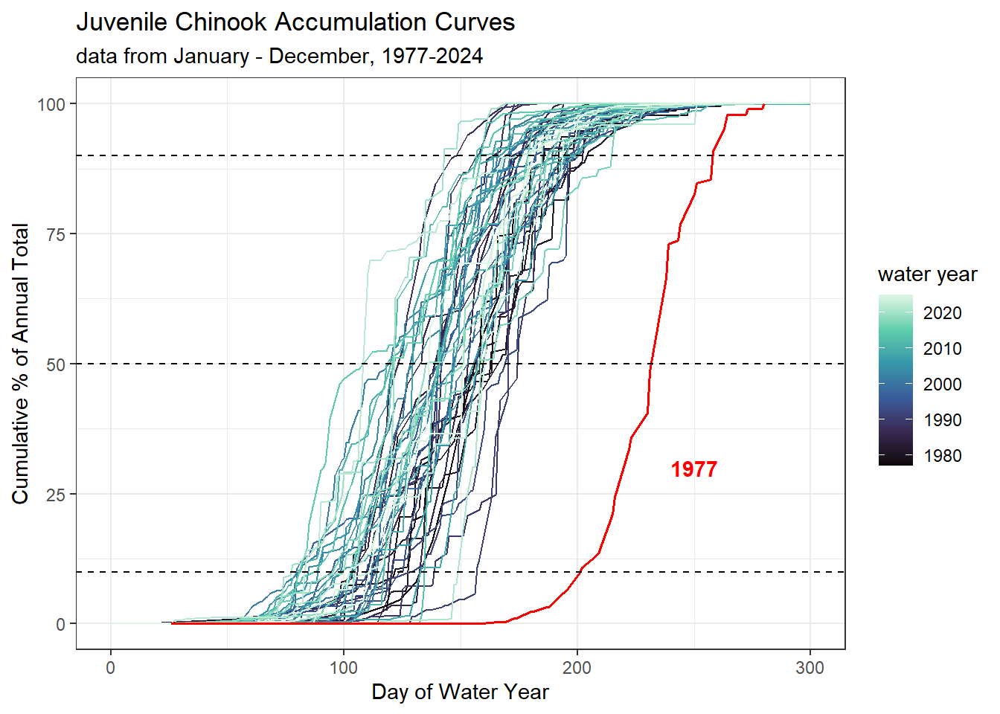
ggsave(here("salmon/plots/accum_allmonths.png"))Saving 7 x 5 in imageWarning: Removed 926 rows containing missing values or values outside the scale range
(`geom_line()`).# "outlier" is 1977
# plotted data from 1992 (when seines were conducted monthly year round) to 2024; not used
ggplot(daily_cum %>%
filter(wy >= 1992),
aes(x = wd,
y = cum_percent,
group = wy,
color = wy)) +
geom_line() +
xlim(0, 300) +
geom_hline(yintercept = c(10, 50, 90),
linetype = "dashed") +
scale_color_viridis_c(option = "mako") +
labs(x = "Day of Water Year",
y = "Cumulative % of Annual Total",
title = "Juvenile Chinook Accumulation Curves",
subtitle = "data from January - December, 1992-2024",
color = "water year") +
theme_bw()Warning: Removed 916 rows containing missing values or values outside the scale range
(`geom_line()`).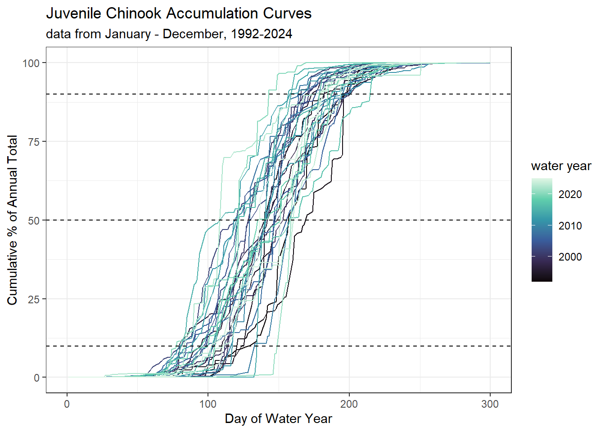
# THIS is the approach that we prob want to use
# limit the data to January - March: data = daily_cum_limited
ggplot(daily_cum_limited,
aes(x = wd,
y = cum_percent,
group = wy,
color = wy)) +
geom_line() +
# add 1977 on top in red
geom_line(data = subset(daily_cum_limited, wy == 1977),
color = "red",
linewidth = 0.7) +
xlim(0, 300) +
geom_hline(yintercept = c(10, 50, 90),
linetype = "dashed") +
scale_color_viridis_c(option = "mako") +
annotate("text", x = 190, y = 30,
label = "1977", color = "red", fontface = "bold") +
labs(x = "Day of Water Year",
y = "Cumulative % of Annual Total",
title = "Juvenile Chinook Accumulation Curves",
subtitle = "data from January - March only, 1977-2024",
color = "water year") +
theme_bw()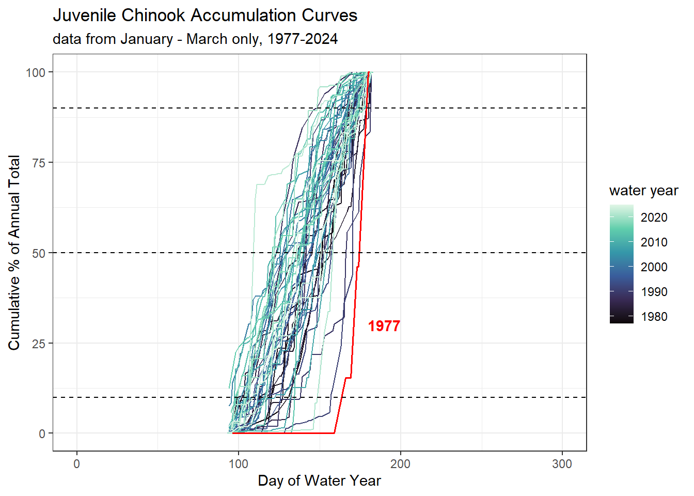
ggsave(here("salmon/plots/accum_jan2mar.png"))Saving 7 x 5 in imagebenchmarks
Determine the day of each water year when 10%, 50% and 90% of the total annual numbers are reached.
## ID benchmarks ----
# day of water year when the 10%, 50% and 90% of total annual numbers are reached
# using 10%, 50%, and 90% accumulation benchmarks (arbitrary)
benchmarks <- c(10, 50, 90)
# gen df of water year days when threshold reached for each year
percentile_days <-
daily_cum %>%
group_by(wy) %>%
summarise(
day_10 = min(wd[cum_percent >= 10]),
day_50 = min(wd[cum_percent >= 50]),
day_90 = min(wd[cum_percent >= 90]),
.groups = "drop"
)
# gen df of water year days when threshold reach for each year, using data from
# January - March only
percentile_days_limited <-
daily_cum_limited %>%
group_by(wy) %>%
summarise(
day_10 = min(wd[cum_percent >= 10]),
day_50 = min(wd[cum_percent >= 50]),
day_90 = min(wd[cum_percent >= 90]),
.groups = "drop"
)
# pivot data to long format to facilitate graphics
pctl_days <-
percentile_days %>%
pivot_longer(cols = c(day_10, day_50, day_90),
names_to = "percentile",
values_to = "wd") %>%
mutate(percentile = factor(percentile))
pctl_days_limited <-
percentile_days_limited %>%
pivot_longer(cols = c(day_10, day_50, day_90),
names_to = "percentile",
values_to = "wd") %>%
mutate(percentile = factor(percentile))water year type
Add the water year type data to the percentile data for analysis and graphics.
## year type ----
# first, add water year type to the percentile_days df
wy_type <-
read_excel(here("salmon/data/raw/cdec-water-year-type-jun-2025.xlsx")) %>%
mutate(wy = WY,
wyt = factor(WYT),
watershed = factor(Area),
.keep = "unused")
pctl_days_wyt <-
wy_type %>%
# select Sac watershed, excludes SJR watershed
filter(watershed == "Sacramento Valley") %>%
# merge w simple df, includes 1977 data
right_join(pctl_days,
by = "wy") %>%
dplyr::select(-watershed) %>%
# specify order of the wyt levels
mutate(wyt = fct_relevel(wyt, "W", "AN", "BN", "D", "C"),
# center wy to facilitate model convergence
wy_centered = wy - 1977) %>%
relocate(wy_centered, .after = wy)
# make 'wyt' an ordered factor
pctl_days_wyt <- pctl_days_wyt %>%
mutate(wyt = factor(wyt, levels = c("C", "D", "BN", "AN", "W"),
# must be low to high, where C<D<BN<AN<W
ordered = TRUE))
write_rds(pctl_days_wyt,
here("salmon/data/processed/pctl_days_wyt.rds"))migration timing
Plot the water year days when each benchmark (10, 50, or 90%) is reach for each water year.
# figure shows the day of the water year for each benchmark (10, 50, 90%) for each year
benchmark_trends_limited <-
pctl_days_limited %>%
ggplot(
# color points according to threshold (10, 50, 90%)
aes(x = wy, y = wd, color = percentile)
) +
geom_point(size = 4) +
scale_color_fish(discrete = TRUE,
option = "Oncorhynchus_tshawytscha",
alpha = 0.6) +
geom_smooth(data = pctl_days_limited[4:147,],
alpha = 0.2,
# show linear trends
method = "lm",
se = TRUE) +
labs(title = "Chinook Salmon Outmigration Timing",
subtitle = "data from January-March only; 1977 excluded from trend analyses",
x = "Water Year",
y = "Day of the Water Year",
color = "Percentile") +
theme_bw()
benchmark_trends_limited`geom_smooth()` using formula = 'y ~ x'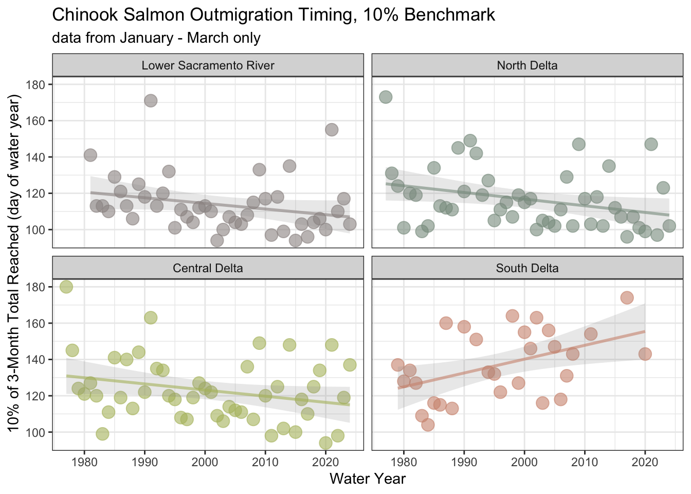
models
year effect
Testing for a water year effect, focusing first on the day10 benchmark, when 10% of each annual total has been reached.
percentile_days_limited# A tibble: 49 × 4
wy day_10 day_50 day_90
<dbl> <dbl> <dbl> <dbl>
1 1977 166 180 180
2 1978 131 152 173
3 1979 124 152 173
4 1980 121 159 177
5 1981 127 142 176
6 1982 113 153 181
7 1983 103 147 181
8 1984 104 137 172
9 1985 134 156 169
10 1986 113 129 171
# ℹ 39 more rows# first including data from 1977
# reaching the 10% benchmark
m3.day10.wy <-
brm(data = percentile_days_limited, # use the percentile_days_limited data
# use a gaussian (normal) distribution
family= gaussian,
# specify the model
day_10 ~ 1 + wy,
# specify parameters for executing the Markov chains
iter = 2000, warmup = 1000, chains = 4, cores =4,
# set seed so team gets the same results when running the model
seed = 42,
file = here("salmon/results/m3.day10.wy"),
file_refit = "on_change")
# run posterior predictive check
pp_check(m3.day10.wy)Using 10 posterior draws for ppc type 'dens_overlay' by default.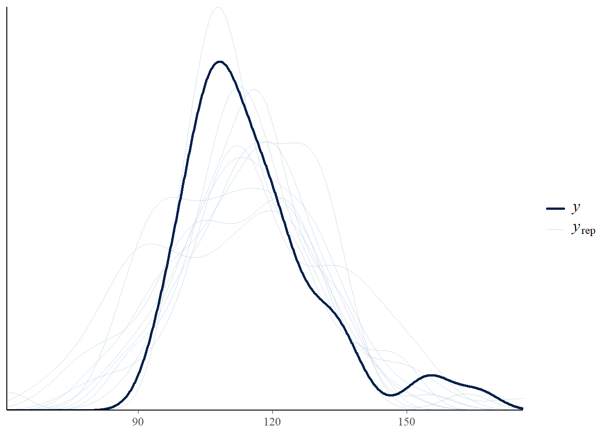
write_rds(m3.day10.wy, here("salmon/results/m3.day10.wy.rds"))
m3.day10.wy_robust <-
brm(data = percentile_days_limited,
family = student, # <--- change from gaussian to student
day_10 ~ 1 + wy,
# apply loo_moment_match on problematic observations bc crazy 1977 outlier
save_pars = save_pars(all = TRUE),
iter = 2000, warmup = 1000, chains = 4, cores = 4,
seed = 42,
file = here("salmon/results/m3.day10.wy_robust"),
file_refit = "on_change")
# looks a bit better!
pp_check(m3.day10.wy_robust)Using 10 posterior draws for ppc type 'dens_overlay' by default.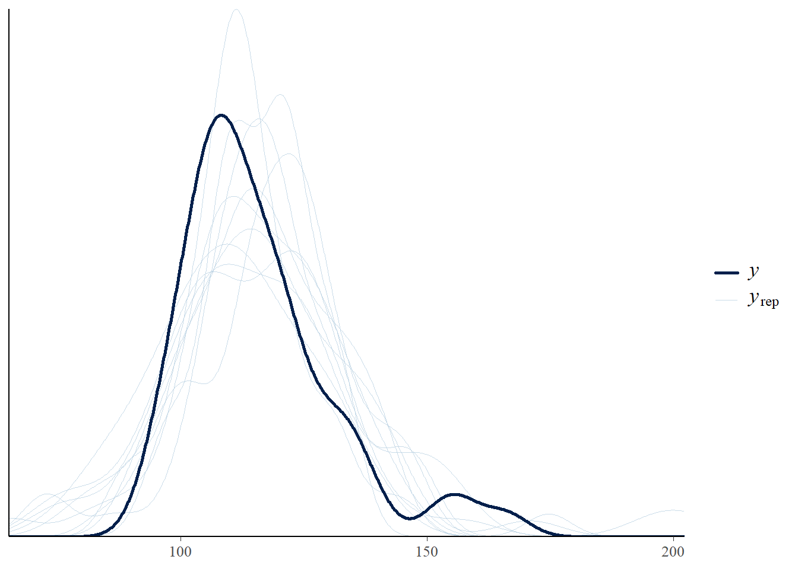
# calculate LOO for the original Jan-Mar Gaussian model
m3.day10.wy <- add_criterion(m3.day10.wy, criterion = "loo")
# warning about "Pareto values > 0.7" happens when one data point (like 1977) is so influential that the model changes drastically when it's removed
# calculate LOO for the new "robust" (Student-t) model
m3.day10.wy_robust <- add_criterion(m3.day10.wy_robust, criterion = "loo")
# compare the two day10 models
loo_compare(m3.day10.wy, m3.day10.wy_robust, criterion = "loo") elpd_diff se_diff
m3.day10.wy_robust 0.0 0.0
m3.day10.wy -2.5 1.6 # notes:
# the performance difference between the models is very modest:
# the rule of thumb is: consider one model "clearly better" if the elpd_diff is more than twice the se_diff, but my difference is 2.8, and my error is 1.5, so both models are performing similarly
m3.day10.wy_robust$criteria$loo
Computed from 4000 by 49 log-likelihood matrix.
Estimate SE
elpd_loo -201.5 7.8
p_loo 4.1 0.9
looic 403.0 15.6
------
MCSE of elpd_loo is 0.1.
MCSE and ESS estimates assume MCMC draws (r_eff in [0.4, 0.9]).
All Pareto k estimates are good (k < 0.7).
See help('pareto-k-diagnostic') for details.m3.day10.wy$criteria$loo
Computed from 4000 by 49 log-likelihood matrix.
Estimate SE
elpd_loo -204.0 7.7
p_loo 4.1 1.7
looic 408.1 15.5
------
MCSE of elpd_loo is 0.1.
MCSE and ESS estimates assume MCMC draws (r_eff in [0.7, 1.0]).
All Pareto k estimates are good (k < 0.7).
See help('pareto-k-diagnostic') for details.# the robust model (using Student-t distribution) seems to perform slightly better,
# but the improvement could plausibly be attributed to noise
# let's plot the k values for each model
plot(m3.day10.wy$criteria$loo)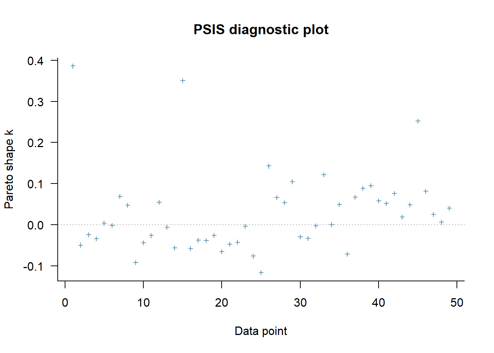
plot(m3.day10.wy_robust$criteria$loo)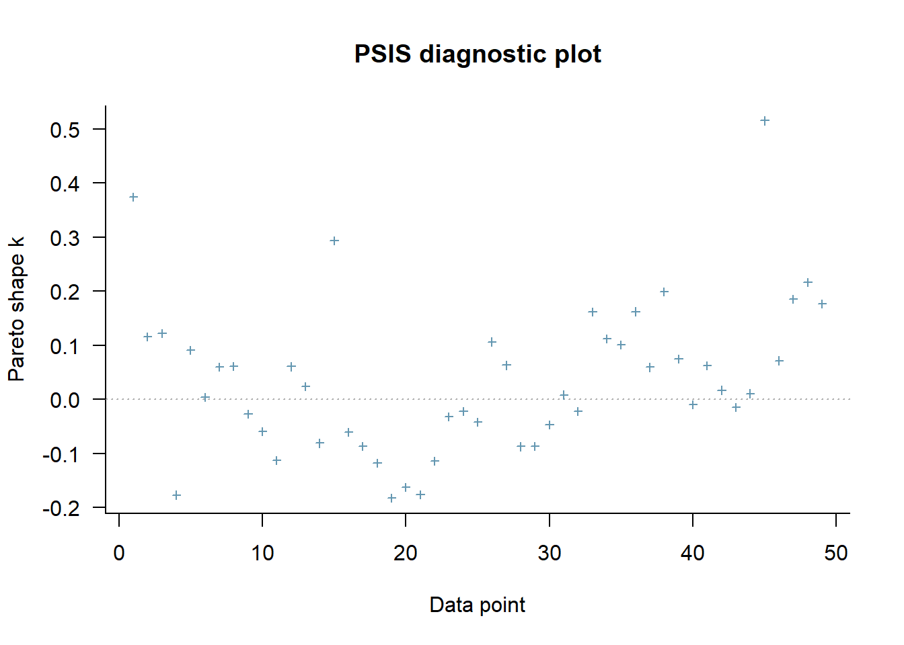
# PSIS diagnostic plots confirm that both models are pretty good, but also
# show how nicely the 'robust' model handles the extreme datum from 1977
summary(m3.day10.wy_robust) Family: student
Links: mu = identity
Formula: day_10 ~ 1 + wy
Data: percentile_days_limited (Number of observations: 49)
Draws: 4 chains, each with iter = 2000; warmup = 1000; thin = 1;
total post-warmup draws = 4000
Regression Coefficients:
Estimate Est.Error l-95% CI u-95% CI Rhat Bulk_ESS Tail_ESS
Intercept 821.99 268.03 293.73 1349.03 1.00 3358 2562
wy -0.35 0.13 -0.62 -0.09 1.00 3361 2511
Further Distributional Parameters:
Estimate Est.Error l-95% CI u-95% CI Rhat Bulk_ESS Tail_ESS
sigma 11.65 2.12 7.80 15.89 1.00 1693 1861
nu 10.25 9.76 1.99 38.34 1.00 1935 2595
Draws were sampled using sampling(NUTS). For each parameter, Bulk_ESS
and Tail_ESS are effective sample size measures, and Rhat is the potential
scale reduction factor on split chains (at convergence, Rhat = 1).plot(m3.day10.wy_robust)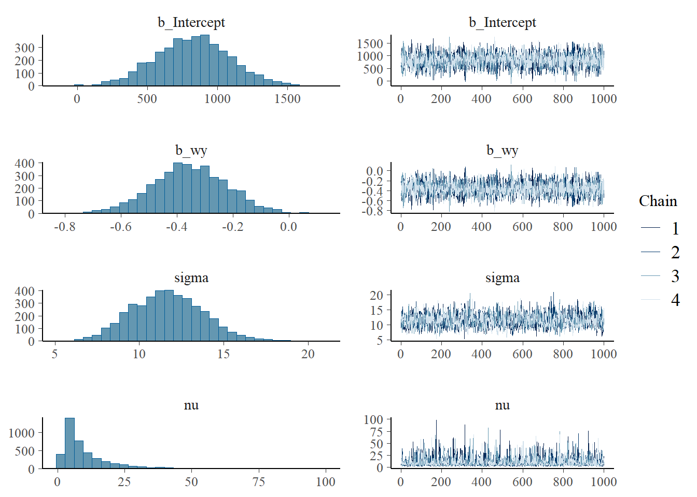
m3.day10.wy_robust %>%
spread_draws(b_wy) %>%
summarise(p_slope_lessthan_zero = sum(b_wy < 0) / n())# A tibble: 1 × 1
p_slope_lessthan_zero
<dbl>
1 0.996The “robust” model for the day10 benchmark provides strong support for the hypothesis that migration, particularly the earlier phase of the process, has shifted earlier in the water year by approximately 0.35 days each year from 1997-2024.
The code below models comparable relationships to the previous code, but uses the day50 and day90 benchmarks. This code needs to be reviewed for accuracy though.
# check this code!
# reaching the 50% benchmark
m3.day50.wy <-
brm(data = percentile_days_limited,
# Choose a gaussian (normal) distribution
family= gaussian,
day_50 ~ 1 + wy,
iter = 2000, warmup = 1000, chains = 4, cores = 4,
seed = 42,
file = here("salmon/results/m3.day50.wy"),
file_refit = "on_change")
# reaching the 90% benchmark
m3.day90.wy <-
brm(data = percentile_days_limited,
family= gaussian,
day_90 ~ 1 + wy,
iter = 2000, warmup = 1000, chains = 4, cores = 4,
seed = 42,
file = here("salmon/results/m3.day90.wy"),
file_refit = "on_change")
summary(m3.day50.wy) Family: gaussian
Links: mu = identity
Formula: day_50 ~ 1 + wy
Data: percentile_days_limited (Number of observations: 49)
Draws: 4 chains, each with iter = 2000; warmup = 1000; thin = 1;
total post-warmup draws = 4000
Regression Coefficients:
Estimate Est.Error l-95% CI u-95% CI Rhat Bulk_ESS Tail_ESS
Intercept 1011.29 260.43 506.14 1523.52 1.00 3724 3077
wy -0.43 0.13 -0.69 -0.18 1.00 3726 3128
Further Distributional Parameters:
Estimate Est.Error l-95% CI u-95% CI Rhat Bulk_ESS Tail_ESS
sigma 12.96 1.36 10.64 15.94 1.00 3153 2389
Draws were sampled using sampling(NUTS). For each parameter, Bulk_ESS
and Tail_ESS are effective sample size measures, and Rhat is the potential
scale reduction factor on split chains (at convergence, Rhat = 1).summary(m3.day90.wy) Family: gaussian
Links: mu = identity
Formula: day_90 ~ 1 + wy
Data: percentile_days_limited (Number of observations: 49)
Draws: 4 chains, each with iter = 2000; warmup = 1000; thin = 1;
total post-warmup draws = 4000
Regression Coefficients:
Estimate Est.Error l-95% CI u-95% CI Rhat Bulk_ESS Tail_ESS
Intercept 472.91 174.82 138.84 810.15 1.00 3522 2641
wy -0.15 0.09 -0.32 0.02 1.00 3529 2636
Further Distributional Parameters:
Estimate Est.Error l-95% CI u-95% CI Rhat Bulk_ESS Tail_ESS
sigma 8.64 0.90 7.10 10.55 1.00 3726 3123
Draws were sampled using sampling(NUTS). For each parameter, Bulk_ESS
and Tail_ESS are effective sample size measures, and Rhat is the potential
scale reduction factor on split chains (at convergence, Rhat = 1).plot(m3.day50.wy)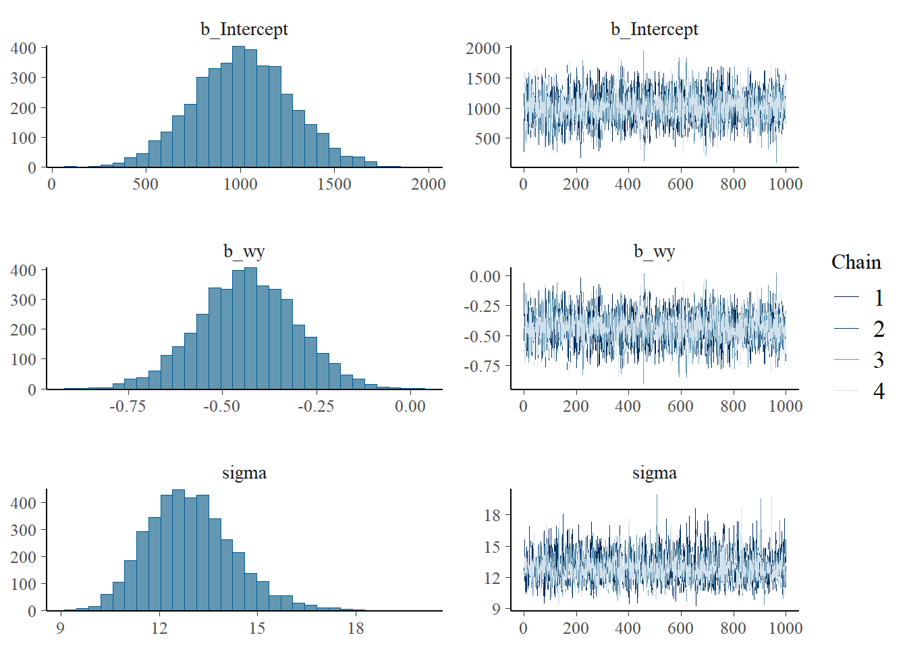
plot(m3.day90.wy)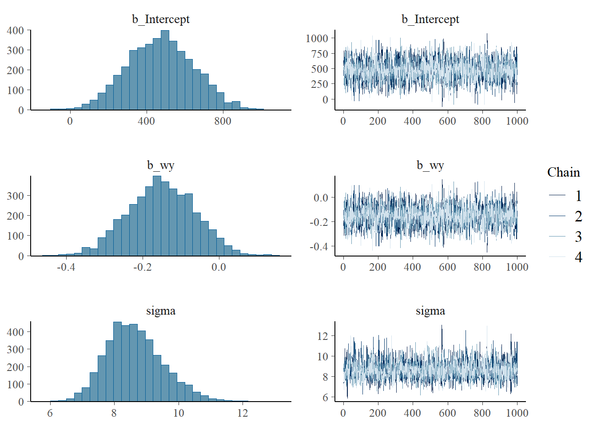
# calc the prob that the slope is less than 0
m3.day10.wy %>%
spread_draws(b_wy) %>%
summarise(p_slope_lessthan_zero = sum(b_wy < 0) / n())# A tibble: 1 × 1
p_slope_lessthan_zero
<dbl>
1 0.995m3.day50.wy %>%
spread_draws(b_wy) %>%
summarise(p_slope_lessthan_zero = sum(b_wy < 0) / n())# A tibble: 1 × 1
p_slope_lessthan_zero
<dbl>
1 1.000m3.day90.wy %>%
spread_draws(b_wy) %>%
summarise(p_slope_lessthan_zero = sum(b_wy < 0) / n())# A tibble: 1 × 1
p_slope_lessthan_zero
<dbl>
1 0.961I tested multiple models to explore the timing of juvenile salmon outmigration, represented by the day of the water year when three benchmarks had been reached over the course of the time series. Each model used a Gaussian distribution with water year as the predictor and the day of the water year when those benchmarks–10, 50, and 90–are reached as the response variable: day10, day50, day90. I limited the data to those gathered during January, February and March because these were sampled consistently (albeit imperfectly) in every year. Early outmigrants entering the Delta in December or earlier would be missed, but presumably the most important early numbers would be reasonably well represented.
These results present strong evidence for a year effect (i.e., model slopes were different from zero, however, the posterior distribution for the day90 model overlaps 0 slightly (95% CIs: -0.73, 0.05).
-For the 10% accumulation model (day10), there was an estimated slope of -0.69 days per year and the probability that the slope is less than 0 equals 0.999.
-For the 50% accumulation model (day50), there was an estimated slope of -0.70 days per year and the probability that the slope is less than 0 equals 1.000.
-For the 90% accumulation model (day90), there was an estimated slope of -0.33 days per year and the probability that the slope is less than 0 equals 0.955.
water year type effect
I also attempted to determine if there was an effect of water year type on the timing of Chinook outmigration. I tested several models that included both water year and wyt (water year type) as explanatory variables.
## year type ----
# first, add water year type to the percentile_days df
wy_type <-
read_excel(here("salmon/data/raw/cdec-water-year-type-jun-2025.xlsx")) %>%
mutate(wy = WY,
wyt = factor(WYT),
watershed = factor(Area),
.keep = "unused")
pctl_days_wyt <-
wy_type %>%
# select Sac watershed, excludes SJR watershed
filter(watershed == "Sacramento Valley") %>%
# merge w simple df, includes 1977 data
right_join(pctl_days,
by = "wy") %>%
dplyr::select(-watershed) %>%
# specify order of the wyt levels
mutate(wyt = fct_relevel(wyt, "W", "AN", "BN", "D", "C"),
# center wy to facilitate model convergence
wy_centered = wy - 1977) %>%
relocate(wy_centered, .after = wy)
# make 'wyt' an ordered factor
pctl_days_wyt <- pctl_days_wyt %>%
mutate(wyt = factor(wyt, levels = c("C", "D", "BN", "AN", "W"),
# must be low to high, where C<D<BN<AN<W
ordered = TRUE))
write_rds(pctl_days_wyt,
here("salmon/data/processed/pctl_days_wyt.rds"))
### wy boxplot -----
pctl_days_wyt %>%
filter(percentile == "day_10",
# no data yet re wyt for 2025
wy <= 2024) %>%
ggplot(aes(x = wyt, y = wd, group = wyt)) +
geom_boxplot() +
labs(title = "Timing of 10% Annual Accumulation Benchmark",
x = "Water Year Type",
y = "Day of the Water Year") +
theme_bw()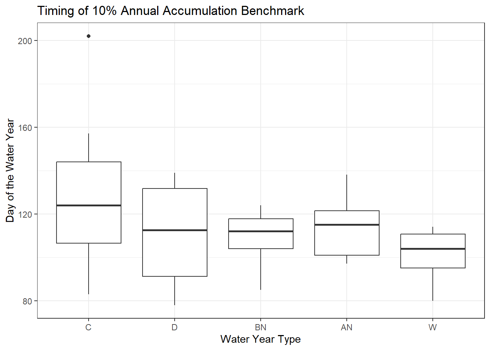
### m1 ----
# run wy + wyt model with the centered variable, where wyt is ordered & monotonic
# 2025 not included
m1.day10.wy.wyt <-
brm(data = pctl_days_wyt %>%
filter(wy <= 2024),
family = gaussian,
wd ~ 0 + wy_centered + mo(wyt),
iter = 10000, warmup = 1000, chains = 4, cores = 4,
seed = 42,
# save fitted model (this one w the wy centered)
file = here("salmon/results/m1.day10.wy.wyt"),
file_refit = "on_change"
)
summary(m1.day10.wy.wyt) Family: gaussian
Links: mu = identity
Formula: wd ~ 0 + wy_centered + mo(wyt)
Data: pctl_days_wyt %>% filter(wy <= 2024) (Number of observations: 144)
Draws: 4 chains, each with iter = 10000; warmup = 1000; thin = 1;
total post-warmup draws = 36000
Regression Coefficients:
Estimate Est.Error l-95% CI u-95% CI Rhat Bulk_ESS Tail_ESS
wy_centered 2.30 0.33 1.65 2.95 1.00 24628 25443
mowyt 25.81 2.91 20.17 31.57 1.00 24609 25234
Monotonic Simplex Parameters:
Estimate Est.Error l-95% CI u-95% CI Rhat Bulk_ESS Tail_ESS
mowyt1[1] 0.74 0.10 0.52 0.91 1.00 32080 21164
mowyt1[2] 0.08 0.07 0.00 0.26 1.00 29262 18917
mowyt1[3] 0.10 0.08 0.00 0.29 1.00 32623 23438
mowyt1[4] 0.08 0.06 0.00 0.24 1.00 33496 21927
Further Distributional Parameters:
Estimate Est.Error l-95% CI u-95% CI Rhat Bulk_ESS Tail_ESS
sigma 71.38 4.27 63.62 80.38 1.00 39275 26583
Draws were sampled using sampling(NUTS). For each parameter, Bulk_ESS
and Tail_ESS are effective sample size measures, and Rhat is the potential
scale reduction factor on split chains (at convergence, Rhat = 1).plot(m1.day10.wy.wyt)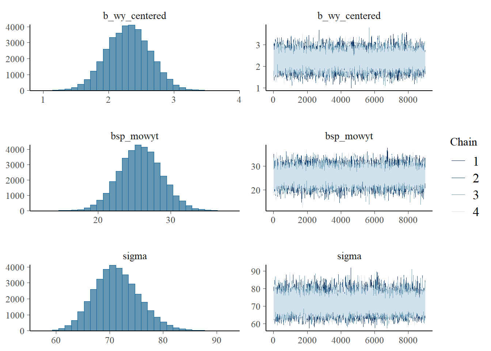
# Rhat is perfect
# water year (centered) effect looks solid
# posterior distributions look great (uniform)
# mcmc look great too
# estimates for year type are wonky--reflects the data!
# strong effect of 'year type' as a monotonic, ordered factor. cool!
# is there an interaction effect?
# should also include some semi-informed priors?
# compute estimated effect for each wyt level
# get predicted effect of each wyt level, holding wy_centered at 0
ce <- conditional_effects(m1.day10.wy.wyt, effects = "wyt", re_formula = NA)
# extract the estimate for each level, plus 95% CIs
wyt_effects <- ce$wyt[, c("wyt", "estimate__", "lower__", "upper__")]
# round for readability
wyt_effects$estimate <- round(wyt_effects$estimate__, 2)
wyt_effects %>%
dplyr::select(-estimate__) %>%
mutate("l-95% CI" = lower__,
"u-95% CI" = upper__,
.keep = "unused") wyt estimate l-95% CI u-95% CI
1 C 54.10 38.8346 69.31505
2 D 130.15 110.3074 147.68581
3 BN 138.77 120.3685 155.43943
4 AN 149.06 132.4367 166.02756
5 W 157.10 140.7942 174.94971# note that these are scaled effects and can't be translated directly into days of the water year! here's an attempt to translate monotonic effects into predicted timing
# Define levels of water year type
levels_wyt <- c("C", "D", "BN", "AN", "W")
# Predicted wd at reference wy_centered = 0
preds <- fitted(m1.day10.wy.wyt, newdata = data.frame(
wyt = levels_wyt,
wy_centered = 0
))
# Assemble into a table
predicted_wd <- data.frame(
wyt = levels_wyt,
estimate = round(preds[, "Estimate"], 1),
l_95 = round(preds[, "Q2.5"], 1),
u_95 = round(preds[, "Q97.5"], 1)
)
predicted_wd wyt estimate l_95 u_95
1 C 0.0 0.0 0.0
2 D 75.8 51.0 99.4
3 BN 84.4 60.3 107.5
4 AN 95.1 72.2 117.5
5 W 103.2 80.7 126.3### m2 ----
# run wy * wyt model with the centered variable, 2025 not included
m2.day10.wy.wyt <-
brm(data = pctl_days_wyt %>%
filter(wy <= 2024),
family = gaussian,
wd ~ 0 + wy_centered * wyt,
iter = 10000, warmup = 1000, chains = 4, cores = 4,
seed = 42,
# save fitted model (this one w the wy centered)
file = here("salmon/results/m2.day10.wy.wyt"),
file_refit = "on_change"
)Compiling Stan program...WARNING: Rtools is required to build R packages, but is not currently installed.
Please download and install the appropriate version of Rtools for 4.5.3 from
https://cran.r-project.org/bin/windows/Rtools/.Trying to compile a simple C fileRunning "C:/PROGRA~1/R/R-45~1.3/bin/x64/Rcmd.exe" SHLIB foo.c
using C compiler: 'gcc.exe (GCC) 14.3.0'
gcc -I"C:/PROGRA~1/R/R-45~1.3/include" -DNDEBUG -I"C:/Users/pnelson/AppData/Local/R/win-library/4.5/Rcpp/include/" -I"C:/Users/pnelson/AppData/Local/R/win-library/4.5/RcppEigen/include/" -I"C:/Users/pnelson/AppData/Local/R/win-library/4.5/RcppEigen/include/unsupported" -I"C:/Users/pnelson/AppData/Local/R/win-library/4.5/BH/include" -I"C:/Users/pnelson/AppData/Local/R/win-library/4.5/StanHeaders/include/src/" -I"C:/Users/pnelson/AppData/Local/R/win-library/4.5/StanHeaders/include/" -I"C:/Users/pnelson/AppData/Local/R/win-library/4.5/RcppParallel/include/" -DRCPP_PARALLEL_USE_TBB=1 -I"C:/Users/pnelson/AppData/Local/R/win-library/4.5/rstan/include" -DEIGEN_NO_DEBUG -DBOOST_DISABLE_ASSERTS -DBOOST_PENDING_INTEGER_LOG2_HPP -DSTAN_THREADS -DUSE_STANC3 -DSTRICT_R_HEADERS -DBOOST_PHOENIX_NO_VARIADIC_EXPRESSION -D_HAS_AUTO_PTR_ETC=0 -include "C:/Users/pnelson/AppData/Local/R/win-library/4.5/StanHeaders/include/stan/math/prim/fun/Eigen.hpp" -std=c++1y -I"C:/rtools45/x86_64-w64-mingw32.static.posix/include" -O2 -Wall -std=gnu2x -mfpmath=sse -msse2 -mstackrealign -c foo.c -o foo.o
cc1.exe: warning: command-line option '-std=c++14' is valid for C++/ObjC++ but not for C
In file included from C:/Users/pnelson/AppData/Local/R/win-library/4.5/RcppEigen/include/Eigen/Core:19,
from C:/Users/pnelson/AppData/Local/R/win-library/4.5/RcppEigen/include/Eigen/Dense:1,
from C:/Users/pnelson/AppData/Local/R/win-library/4.5/StanHeaders/include/stan/math/prim/fun/Eigen.hpp:22,
from <command-line>:
C:/Users/pnelson/AppData/Local/R/win-library/4.5/RcppEigen/include/Eigen/src/Core/util/Macros.h:679:10: fatal error: cmath: No such file or directory
679 | #include <cmath>
| ^~~~~~~
compilation terminated.
make: *** [C:/PROGRA~1/R/R-45~1.3/etc/x64/Makeconf:295: foo.o] Error 1WARNING: Rtools is required to build R packages, but is not currently installed.
Please download and install the appropriate version of Rtools for 4.5.3 from
https://cran.r-project.org/bin/windows/Rtools/.Start samplingsummary(m2.day10.wy.wyt) Family: gaussian
Links: mu = identity
Formula: wd ~ 0 + wy_centered * wyt
Data: pctl_days_wyt %>% filter(wy <= 2024) (Number of observations: 144)
Draws: 4 chains, each with iter = 10000; warmup = 1000; thin = 1;
total post-warmup draws = 36000
Regression Coefficients:
Estimate Est.Error l-95% CI u-95% CI Rhat Bulk_ESS Tail_ESS
wy_centered -0.60 0.23 -1.05 -0.15 1.00 31314 26992
wytC 179.44 12.03 155.77 203.09 1.00 39237 26614
wytD 164.88 13.40 138.59 191.24 1.00 34538 26687
wytBN 152.61 21.12 111.28 193.80 1.00 26139 24892
wytAN 160.31 13.47 133.89 186.74 1.00 34420 27809
wytW 148.68 10.99 127.15 170.37 1.00 38820 26704
wy_centered:wyt.L 0.85 0.44 -0.02 1.72 1.00 34961 26665
wy_centered:wyt.Q -0.12 0.52 -1.13 0.91 1.00 30394 26535
wy_centered:wyt.C 0.06 0.51 -0.93 1.06 1.00 33762 26064
wy_centered:wytE4 0.38 0.60 -0.79 1.55 1.00 31748 25612
Further Distributional Parameters:
Estimate Est.Error l-95% CI u-95% CI Rhat Bulk_ESS Tail_ESS
sigma 35.88 2.22 31.85 40.56 1.00 47193 26471
Draws were sampled using sampling(NUTS). For each parameter, Bulk_ESS
and Tail_ESS are effective sample size measures, and Rhat is the potential
scale reduction factor on split chains (at convergence, Rhat = 1).plot(m2.day10.wy.wyt)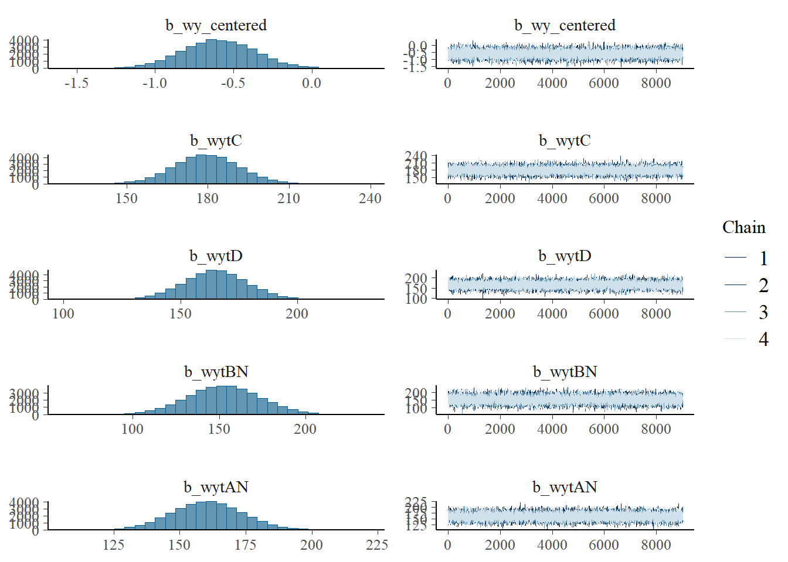
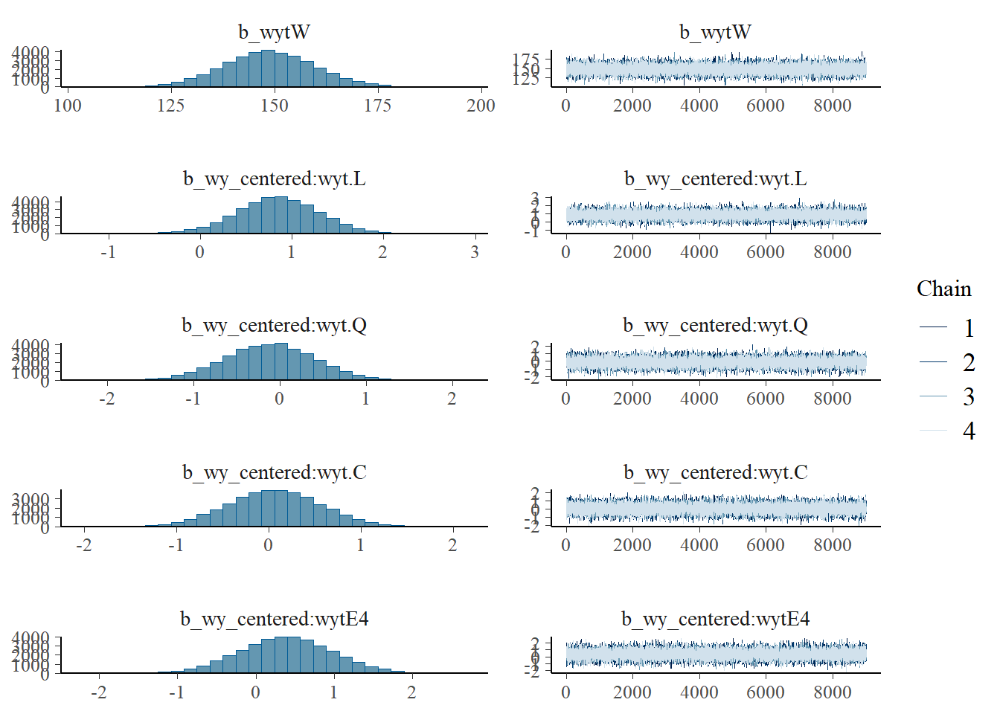
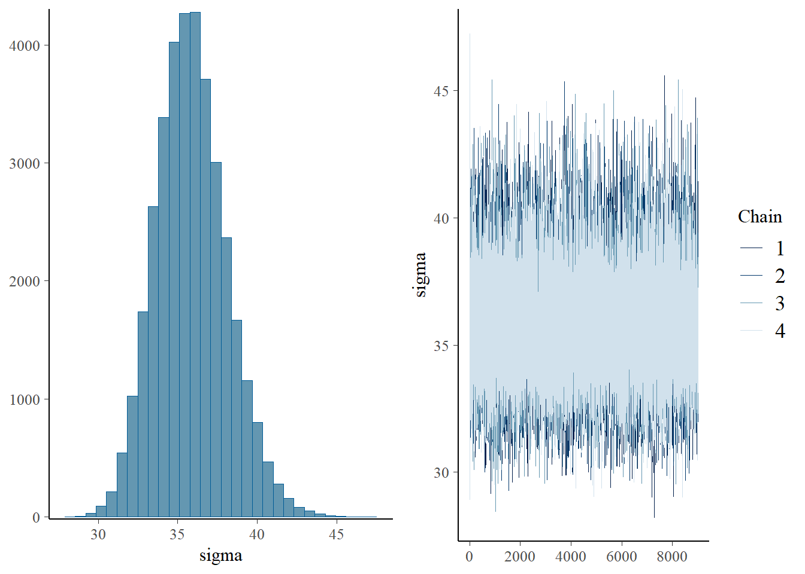
### m3 ----
# run wy * wyt model with the centered variable, 2025 not included, replace Gaussian w Students-t distribution
m3.day10.wy.wyt <-
brm(data = pctl_days_wyt %>%
filter(wy <= 2024),
family = student,
wd ~ 0 + wy_centered * wyt,
iter = 10000, warmup = 1000, chains = 4, cores = 4,
seed = 42,
# save fitted model (this one w the wy centered)
file = here("salmon/results/m3.day10.wy.wyt"),
file_refit = "on_change"
)Compiling Stan program...WARNING: Rtools is required to build R packages, but is not currently installed.
Please download and install the appropriate version of Rtools for 4.5.3 from
https://cran.r-project.org/bin/windows/Rtools/.Trying to compile a simple C fileRunning "C:/PROGRA~1/R/R-45~1.3/bin/x64/Rcmd.exe" SHLIB foo.c
using C compiler: 'gcc.exe (GCC) 14.3.0'
gcc -I"C:/PROGRA~1/R/R-45~1.3/include" -DNDEBUG -I"C:/Users/pnelson/AppData/Local/R/win-library/4.5/Rcpp/include/" -I"C:/Users/pnelson/AppData/Local/R/win-library/4.5/RcppEigen/include/" -I"C:/Users/pnelson/AppData/Local/R/win-library/4.5/RcppEigen/include/unsupported" -I"C:/Users/pnelson/AppData/Local/R/win-library/4.5/BH/include" -I"C:/Users/pnelson/AppData/Local/R/win-library/4.5/StanHeaders/include/src/" -I"C:/Users/pnelson/AppData/Local/R/win-library/4.5/StanHeaders/include/" -I"C:/Users/pnelson/AppData/Local/R/win-library/4.5/RcppParallel/include/" -DRCPP_PARALLEL_USE_TBB=1 -I"C:/Users/pnelson/AppData/Local/R/win-library/4.5/rstan/include" -DEIGEN_NO_DEBUG -DBOOST_DISABLE_ASSERTS -DBOOST_PENDING_INTEGER_LOG2_HPP -DSTAN_THREADS -DUSE_STANC3 -DSTRICT_R_HEADERS -DBOOST_PHOENIX_NO_VARIADIC_EXPRESSION -D_HAS_AUTO_PTR_ETC=0 -include "C:/Users/pnelson/AppData/Local/R/win-library/4.5/StanHeaders/include/stan/math/prim/fun/Eigen.hpp" -std=c++1y -I"C:/rtools45/x86_64-w64-mingw32.static.posix/include" -O2 -Wall -std=gnu2x -mfpmath=sse -msse2 -mstackrealign -c foo.c -o foo.o
cc1.exe: warning: command-line option '-std=c++14' is valid for C++/ObjC++ but not for C
In file included from C:/Users/pnelson/AppData/Local/R/win-library/4.5/RcppEigen/include/Eigen/Core:19,
from C:/Users/pnelson/AppData/Local/R/win-library/4.5/RcppEigen/include/Eigen/Dense:1,
from C:/Users/pnelson/AppData/Local/R/win-library/4.5/StanHeaders/include/stan/math/prim/fun/Eigen.hpp:22,
from <command-line>:
C:/Users/pnelson/AppData/Local/R/win-library/4.5/RcppEigen/include/Eigen/src/Core/util/Macros.h:679:10: fatal error: cmath: No such file or directory
679 | #include <cmath>
| ^~~~~~~
compilation terminated.
make: *** [C:/PROGRA~1/R/R-45~1.3/etc/x64/Makeconf:295: foo.o] Error 1WARNING: Rtools is required to build R packages, but is not currently installed.
Please download and install the appropriate version of Rtools for 4.5.3 from
https://cran.r-project.org/bin/windows/Rtools/.Start sampling# to be consistent, I should prob designate this model as 'robust', but can't be bothered
summary(m3.day10.wy.wyt) Family: student
Links: mu = identity
Formula: wd ~ 0 + wy_centered * wyt
Data: pctl_days_wyt %>% filter(wy <= 2024) (Number of observations: 144)
Draws: 4 chains, each with iter = 10000; warmup = 1000; thin = 1;
total post-warmup draws = 36000
Regression Coefficients:
Estimate Est.Error l-95% CI u-95% CI Rhat Bulk_ESS Tail_ESS
wy_centered -0.59 0.23 -1.05 -0.13 1.00 29984 27020
wytC 178.00 12.58 153.13 202.53 1.00 35587 26155
wytD 164.87 13.25 138.81 190.84 1.00 32621 26740
wytBN 152.88 21.23 110.60 194.63 1.00 26945 25487
wytAN 160.51 13.50 134.01 186.77 1.00 33634 28494
wytW 148.62 11.34 126.03 170.89 1.00 36652 25647
wy_centered:wyt.L 0.82 0.46 -0.08 1.72 1.00 33717 27505
wy_centered:wyt.Q -0.09 0.53 -1.13 0.95 1.00 29790 25251
wy_centered:wyt.C 0.05 0.51 -0.96 1.07 1.00 32855 27682
wy_centered:wytE4 0.38 0.59 -0.78 1.53 1.00 32285 27151
Further Distributional Parameters:
Estimate Est.Error l-95% CI u-95% CI Rhat Bulk_ESS Tail_ESS
sigma 35.16 2.27 30.98 39.89 1.00 46290 26426
nu 32.48 15.60 11.06 70.17 1.00 49233 25595
Draws were sampled using sampling(NUTS). For each parameter, Bulk_ESS
and Tail_ESS are effective sample size measures, and Rhat is the potential
scale reduction factor on split chains (at convergence, Rhat = 1).plot(m3.day10.wy.wyt)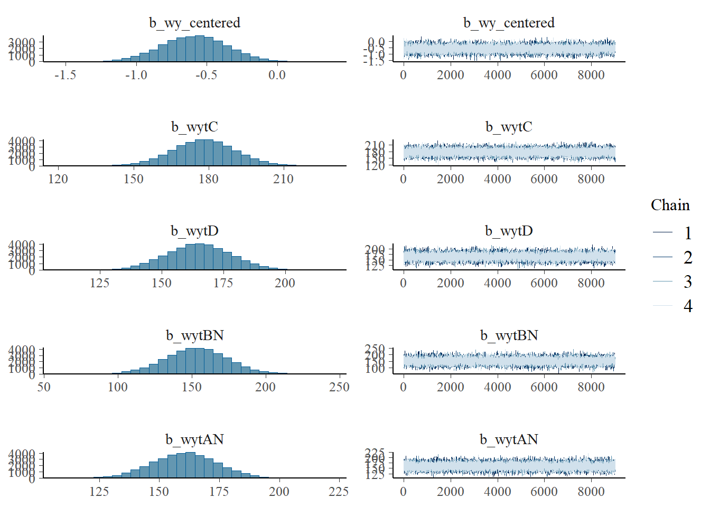
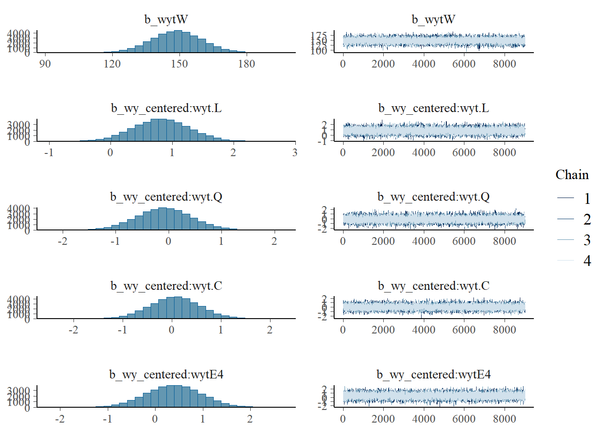
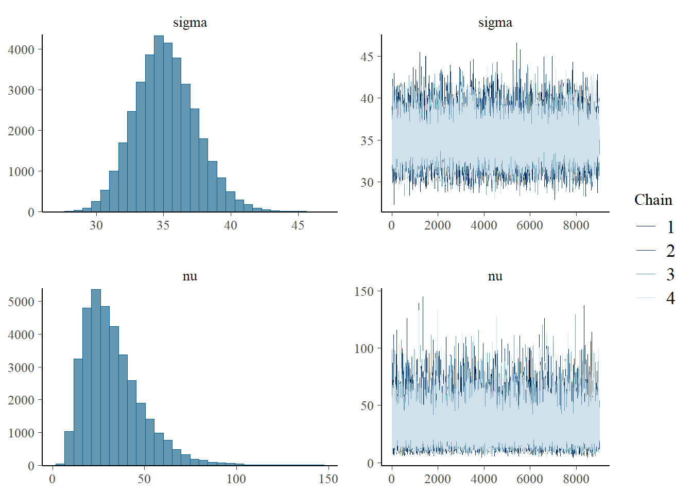
# posterior predictive check (see density overlay figures)
pp_check(m1.day10.wy.wyt)Using 10 posterior draws for ppc type 'dens_overlay' by default.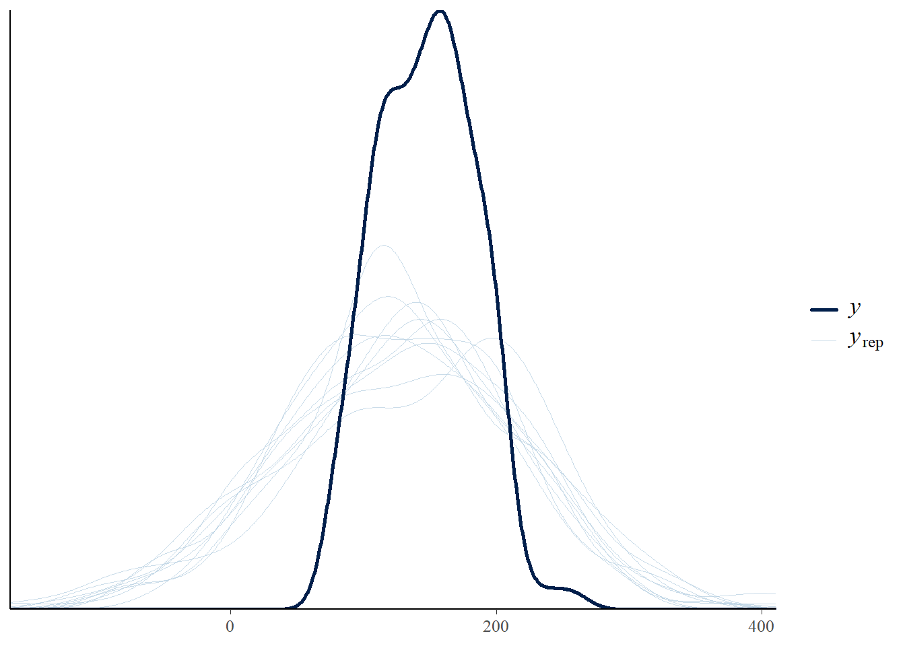
pp_check(m2.day10.wy.wyt)Using 10 posterior draws for ppc type 'dens_overlay' by default.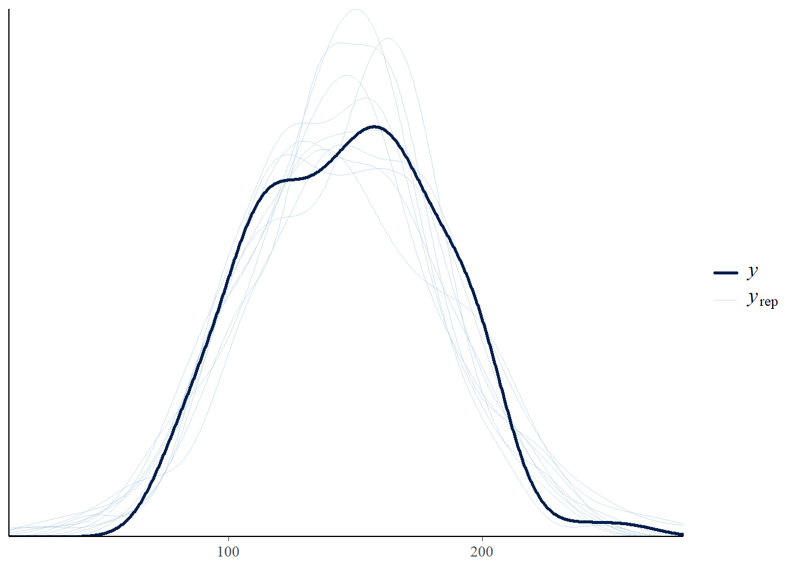
pp_check(m3.day10.wy.wyt)Using 10 posterior draws for ppc type 'dens_overlay' by default.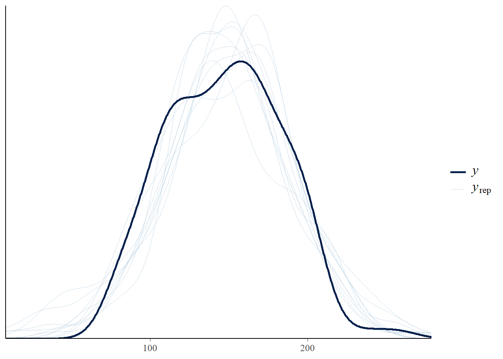
# calculate LOO for the original water_year + water_year_type Gaussian model
m1.day10.wy.wyt <- add_criterion(m1.day10.wy.wyt, criterion = "loo")Automatically saving the model object in 'C:/Users/pnelson/OneDrive - California Department of Water Resources/3-Projects/09-first flush/FirstFlush/salmon/results/m1.day10.wy.wyt.rds'# calculate LOO for the water_year * water_year_type Gaussian model
m2.day10.wy.wyt <- add_criterion(m2.day10.wy.wyt, criterion = "loo")Automatically saving the model object in 'C:/Users/pnelson/OneDrive - California Department of Water Resources/3-Projects/09-first flush/FirstFlush/salmon/results/m2.day10.wy.wyt.rds'# calculate LOO for the water_year * water_year_type Student-t "robust" model
m3.day10.wy.wyt <- add_criterion(m3.day10.wy.wyt, criterion = "loo")Automatically saving the model object in 'C:/Users/pnelson/OneDrive - California Department of Water Resources/3-Projects/09-first flush/FirstFlush/salmon/results/m3.day10.wy.wyt.rds'# compare the three day10 wyt models with interaction terms
loo_compare(m1.day10.wy.wyt, m2.day10.wy.wyt, m3.day10.wy.wyt, criterion = "loo") elpd_diff se_diff
m2.day10.wy.wyt 0.0 0.0
m3.day10.wy.wyt -1.6 0.2
m1.day10.wy.wyt -95.9 10.7 # no real difference in model performance among the 3...
m1.day10.wy.wyt$criteria$loo
Computed from 36000 by 144 log-likelihood matrix.
Estimate SE
elpd_loo -821.0 10.8
p_loo 3.3 0.7
looic 1641.9 21.7
------
MCSE of elpd_loo is 0.0.
MCSE and ESS estimates assume MCMC draws (r_eff in [0.7, 1.2]).
All Pareto k estimates are good (k < 0.7).
See help('pareto-k-diagnostic') for details.m2.day10.wy.wyt$criteria$loo
Computed from 36000 by 144 log-likelihood matrix.
Estimate SE
elpd_loo -725.1 6.1
p_loo 10.1 1.0
looic 1450.1 12.1
------
MCSE of elpd_loo is 0.0.
MCSE and ESS estimates assume MCMC draws (r_eff in [0.6, 1.1]).
All Pareto k estimates are good (k < 0.7).
See help('pareto-k-diagnostic') for details.m3.day10.wy.wyt$criteria$loo
Computed from 36000 by 144 log-likelihood matrix.
Estimate SE
elpd_loo -726.6 6.1
p_loo 10.5 1.0
looic 1453.3 12.3
------
MCSE of elpd_loo is 0.0.
MCSE and ESS estimates assume MCMC draws (r_eff in [0.6, 1.1]).
All Pareto k estimates are good (k < 0.7).
See help('pareto-k-diagnostic') for details.# let's plot the k values for each model (cause I like these figures)
plot(m1.day10.wy.wyt$criteria$loo)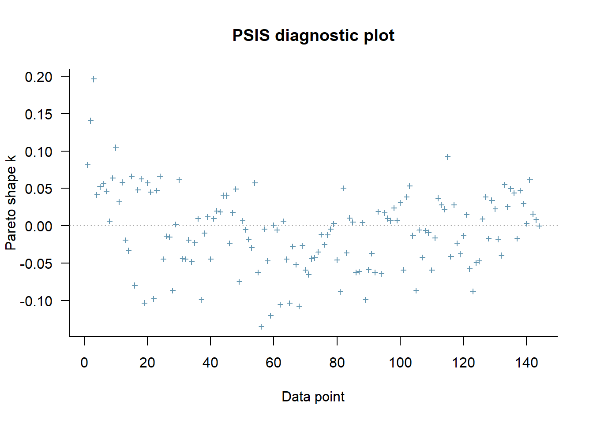
plot(m2.day10.wy.wyt$criteria$loo)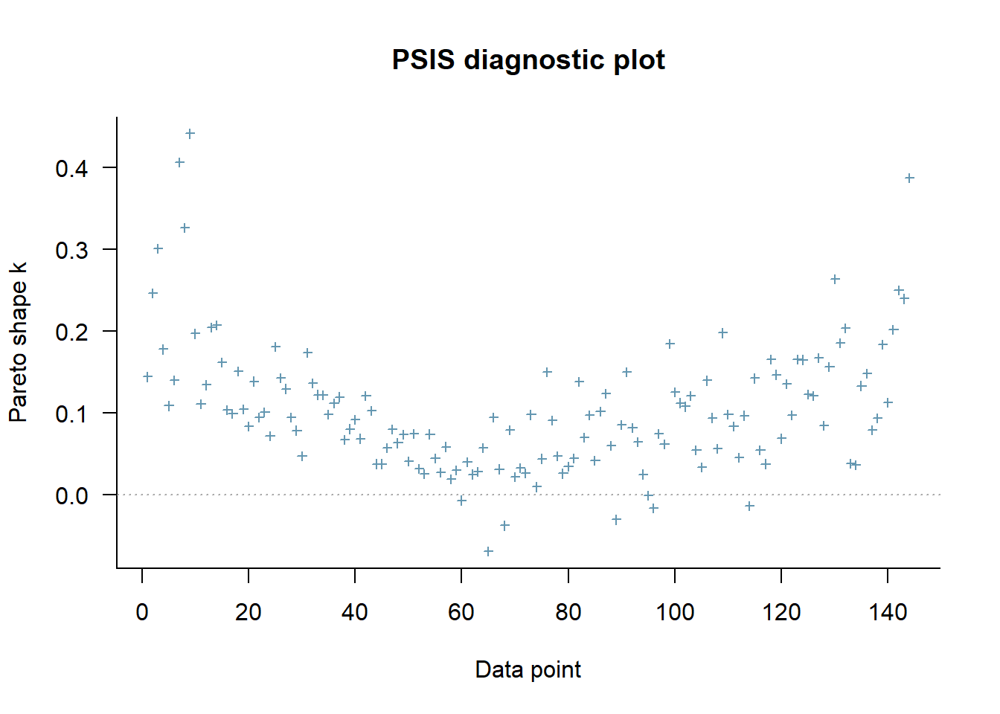
plot(m3.day10.wy.wyt$criteria$loo)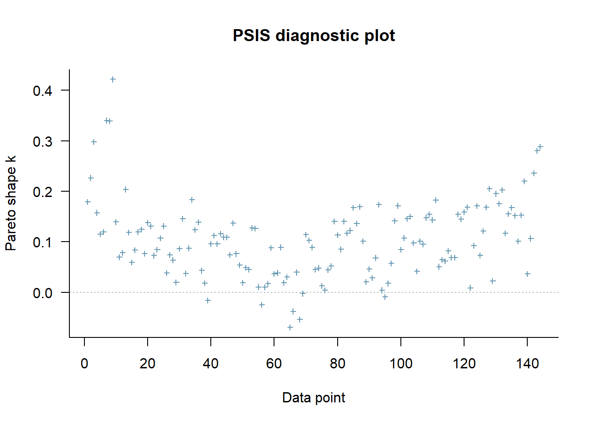
# everything well below 0.7...